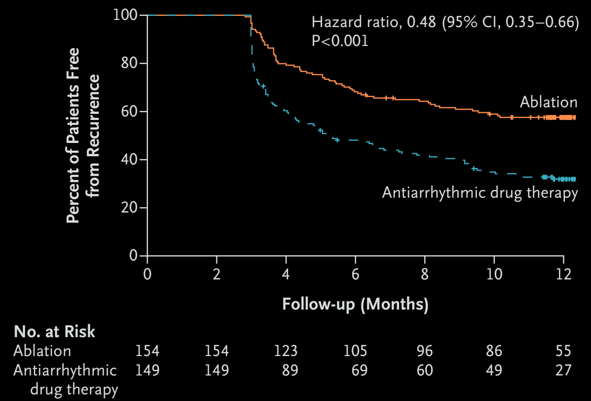
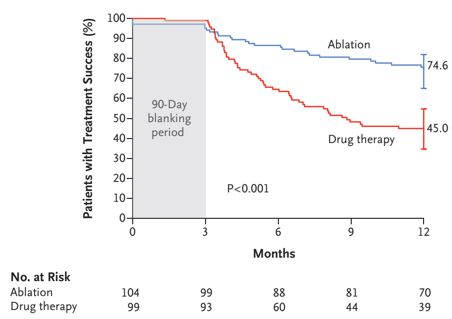

CRYO-ablation for 1st Line Treatment of Symptomatic Paroxysmal AF
EARLY-AF is the largest RCT to date to assess the efficacy of AF ablation for initial treatment of symptomatic paroxysmal AF.
A total of 303 patietns (age 58, 2/3 male) were randomly assigned to cryoballoon ablation vs. antiarrhythmic agents
The primary endpoint was the first documented AT/AF/AFL after the blanking period of 3 months; assesed by continuous ECG monitoring.

Freedom from Recurrence of Atrial Tachyarrhythmia over Time in EARLY-AF.
Symptomatic atrial tachyarrhythmia had recurred in 11.0%
of the patients who underwent ablation and in 26.2% of those who received
antiarrhythmic drugs (HR, 0.39; 95% CI, 0.22 to 0.68).
Serious adverse events occurred in 5 patients (3.2%) who underwent ablation and in 6 patients
(4.0%) who received antiarrhythmic drugs.

Treatment Success in STOP-AF. Treatment success was defined as freedom from any of the following events:
initial failure of the procedure; any subsequent atrial fibrillation surgery or
ablation in the left atrium; or atrial arrhythmia recurrence, cardioversion, or
use of class I or III antiarrhythmic drugs (ablation group only) outside the
90-day blanking period.
Simultanousely published in NEJM, the STOP-AF trial is the trial of the similar concept as that of EARLY-AF.
While EARLY-AF monitored atrial arrhythmias continously, STOP-AF utilized interval monitoring resulting lower event rates.
Regardless, both trials showed the benefits of Cryoablation as the 1st line treatment for symptomatic paroxysmal AF in lowering the recurrence of atrial arrhythmias.